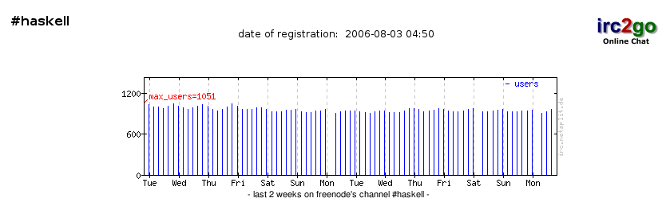
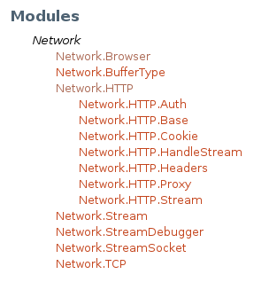
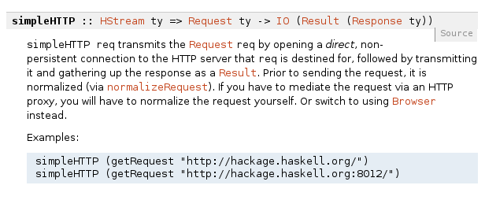

Lecture 7
The Prolific Haskell Community
F12, then click ConsoleF12, then click ConsoleCtrl+Shift+k↓, PgDn, n, j |
next slide |
↑, PgUp, p, k |
prev slide |
Esc |
enables ctrl+f globally |
a
b
c
d
Find everything you need to know about Haskell directly from the official Wiki.
More than 10,000 questions tagged
Server: irc.freenode.net
Channel: #haskell
#haskell is one of the top 10 most popular channels on freenode
More than 10,000 subscribers
The ultimate collection of Haskell packages
For example, try installing the HTTP library
cabal install HTTPCommon Architecture for Building Applications and Libraries
Let's install and use the HTTP package
Download the most recent list of packages
cabal update
Find any package from Hackage
cabal install HTTP
Cabal takes care of installing the package.
The library can now be imported.
import Network.HTTP
All packages come with documentation on Hackage
Let's take a look at one of the functions in Network.HTTP

simpleHTTP takes in a Request object, and returns an IO Monad
Prelude> import Network.HTTP
Prelude Network.HTTP> :t simpleHTTP
simpleHTTP
:: HStream ty =>
Request ty -> IO (Network.Stream.Result (Response ty))
Prelude Network.HTTP> let myRequest
= getRequest "http://duckduckgo.com"
Prelude Network.HTTP> simpleHTTP myRequest >>= getResponseBody
"<!DOCTYPE html>..."
Prelude Network.HTTP> simpleHTTP myRequest >>= getResponseBody
Huh... What's that?
Prelude Network.HTTP> :t (>>=)
(>>=) :: Monad m => m a -> (a -> m b) -> m b
>>= is called the bind operator
Stay tuned till next time for a peek into Monads